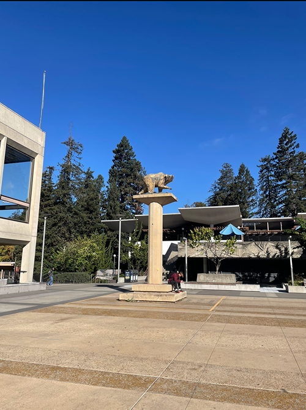

Here are some sample images I took by fixing the center of projection (COP) and rotating my camera while capturing the photos:
First, I used the given online tool to pick out corresponding points between the chosen images. I then wrote the computeH function which serves to compute the homography matrix that maps the points from the first set of corresponding points to the second set of corresponding points. Below are the equations I used to compute the homography matrix. SVD was used to solve for the homography matrix, and the homography matrix H was set to the last vector of V. This vector was then converted into a 3x3 matrix, and the matrix was scaled to have the bottom right value equal to 1.
I then used the homography matrix computed in the previous part to warp one image to match up with the other image. Inverse warping was used to map pixels in the warped output to pixels in the original input image. In order to stitch the images together to create the panaorama, I had to compute the bounding box that would contain both images. I did this by finding the minimum and maximum x and y values among the warped image and the other unwarped image. The bounding box was then filled with the pixels of the warped image and the unwarped image. The function scipy.interpolate.griddata was used for the pixel interpolation.
To test the implentation of my computeH and warpImage functions, I used those functions to rectify some sample images I took. The results are displayed below:


In order to blend the stitched together images, I first created an alpha mask by finding the distance transforms of each image and setting the mask equal to distanceTransform1 > distanceTransform2. I then used my code from Project 2 to create the Gaussian and Laplacian stacks. A level 2 stack was used for each Gaussian and Laplacian. The results of the blending are shown below:
In this part, we automatically select corresponding points to stitch images together, which can be a lot less tedious and time consuming than manually selecting all of the corresponding points. We follow the steps outlined in this research paper: https://inst.eecs.berkeley.edu/~cs180/fa24/hw/proj4/Papers/MOPS.pdf.
First, I used the Harris Interest Point Detector to select key points from images, notably "corners" of an image. I used the functions provided to us to carry out this task, which included the use of the corner_harris function from skimage.feature. The results are displayed below with the selected points overlayed with the images.
Sproul Image1 with Harris Points Overlaid
Sproul Image2 with Harris Points Overlaid
Room Image1 with Harris Points Overlaid
Room Image2 with Harris Points Overlaid
Zellerbach Image1 with Harris Points Overlaid
Zellerbach Image2 with Harris Points Overlaid
Sproul Image1 with ANMS Points Overlaid
Sproul Image2 with ANMS Points Overlaid
Room Image1 with ANMS Points Overlaid
Room Image2 with ANMS Points Overlaid
Zellerbach Image1 with ANMS Points Overlaid
Zellerbach Image2 with ANMS Points Overlaid
Sproul Image1 Patch
Sproul Image2 Patch
Room Image1 Patch
Room Image2 Patch

Zellerbach Image1 Patch
Zellerbach Image2 Patch
Sproul Image1 Feature Matches
Sproul Image2 Feature Matches
Room Image1 Feature Matches
Room Image2 Feature Matches
Zellerbach Image1 Feature Matches
Zellerbach Image2 Feature Matches
Sproul Image1 RANSAC Matches
Sproul Image2 RANSAC Matches
Room Image1 RANSAC Matches
Room Image2 RANSAC Matches
Zellerbach Image1 RANSAC Matches
Zellerbach Image2 RANSAC Matches
Sproul Mosaic With Automatic Correspondences
Sproul Mosaic With Manual Correspondences
Room Mosaic With Automatic Correspondences
Room Mosaic With Manual Correspondences
Zellerbach Mosaic With Automatic Correspondences
Zellerbach Mosaic With Manual Correspondences